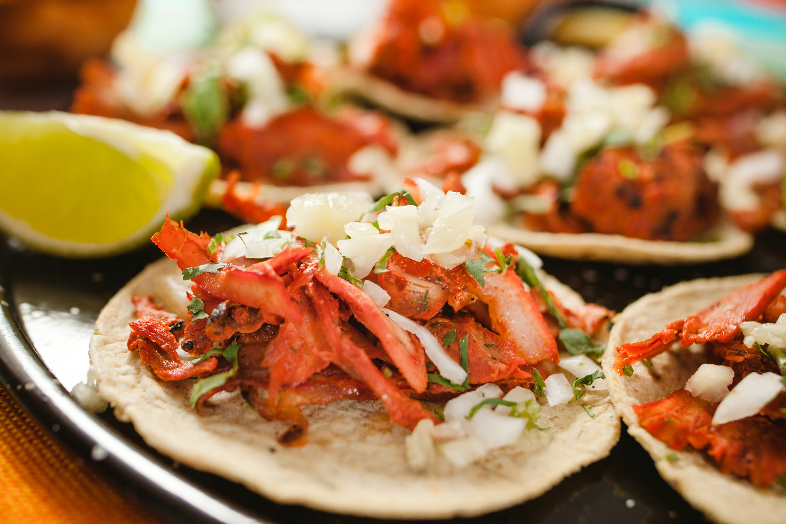

Recommended Entree and Side:
Entree: Tacos Al Pastor

- 5 lds. Pork
- 2 tbsp. Chili Powder
- 1 tbsp. Oregano
- 1 tbsp. Salt
- 3/4 cup White Vinegar
- 3 tbsp. Achiote Paste
- 1 tbsp. Garlic Powder
- 1 tbsp. Cumin
- 1 tbsp. Pepper
- 1 cup Pineapple Juice
- 1 Fresh Pineapple or canned
- Skin and slice the pineapple into 1 inch rounds
- Preheat oven to 350*F
- Slice pork into 1/2 inch slices, put into large dish or bowl
- In another bowl, combine the spices, achiote paste, vinegar, and pineapple juice. Stir until there are not lumps.
- Pour mixture over the pork and toss them until they are cover on all sides.
- Cover bowl and refidgerat for at least 2 hours or overnight.
- Layer pork and pineapple in a large pan and bake for around 2 hours or until well done.
- Serve with Tortillas, Onions, Cilantro, Jalapeños, Limes, and Salsa
Side: Party Perfect Potatoes
- 6 Medium Potatoes, peeled
- 1/2 cup Butter
- 1 can Cream of Chicken Soup
- 1 cup Sour Cream
- 1/3 cup Green Onions, chopped
- 1 cup Cheddar Cheese, grated
- 1/2 cup Corn Flakes, crushed(optional)
- Boil, cool, and shred the potatoes.
- Melt butter in saucepan and add soup, sour cream, green onions, and cheese.
- Mix sauce with potatoes.
- Pour mixture into 13in by 9in casserole dish
- Top with corn flakes(optional)
- Bake at 350 for 30-45 minutes
Or search for your favorite here: